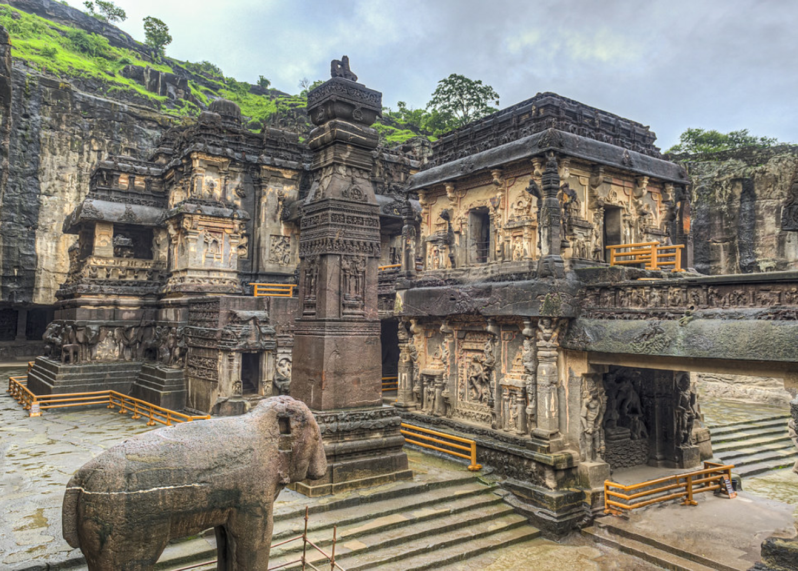

Kailash temple-Ellor,verul,
Maharashtra
kailash temple ellora About:700 CE
The temple was built around 700 CE with additions in the 8th century and restorations in later centuries. It is the first structural temple built in South India by Narasimhavarman II (Rajasimha), also known as Rajasimha Pallaveswaram. His son, Mahendravarman III, completed the front façade and the gopuram (tower). view all...
